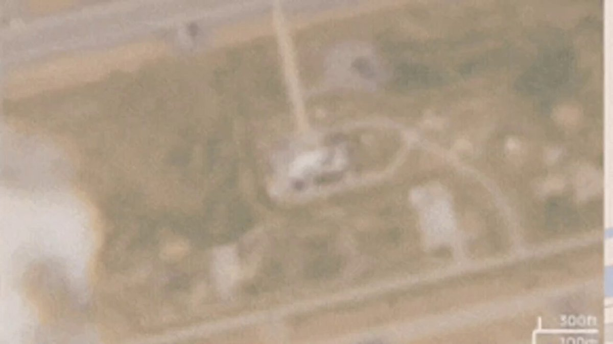
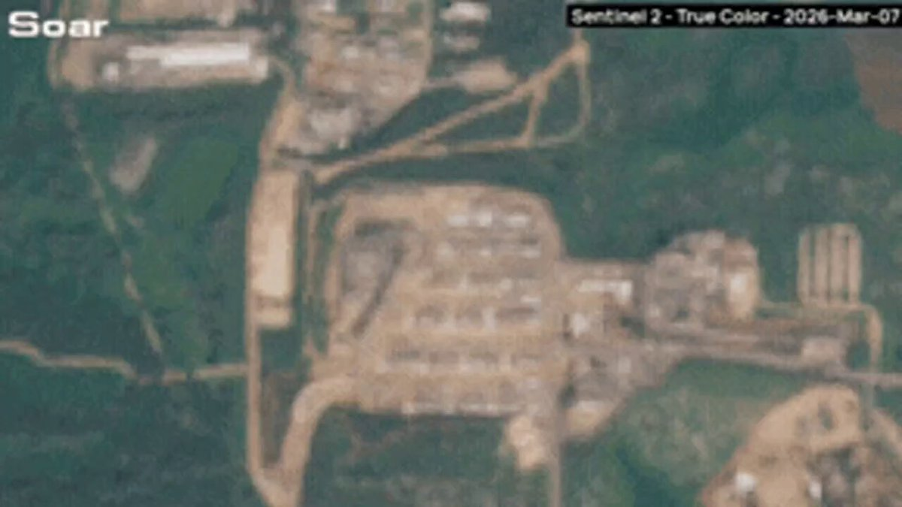

@Tasnimnews_Fa
📝 原文: Satellite Images Reveal Damage to Israeli Bases in Iranian Attacks
Based on Sentinel-2 satellite images, the Ramat David Airbase in southeast occupied Haifa was targeted at two points during the war#ازالة_اسرائیل_من_الوجودhttp://tasnimnews.ir/3597282
🇨🇳 译文: 卫星图像显示伊朗袭击中以色列基地受损
根据 Sentinel-2 卫星图像，战争期间被占领的海法东南部的拉马特大卫空军基地成为两个目标#?????????#?????????????????????????????????



🕒 2026-05-22T10:01:57+00:00